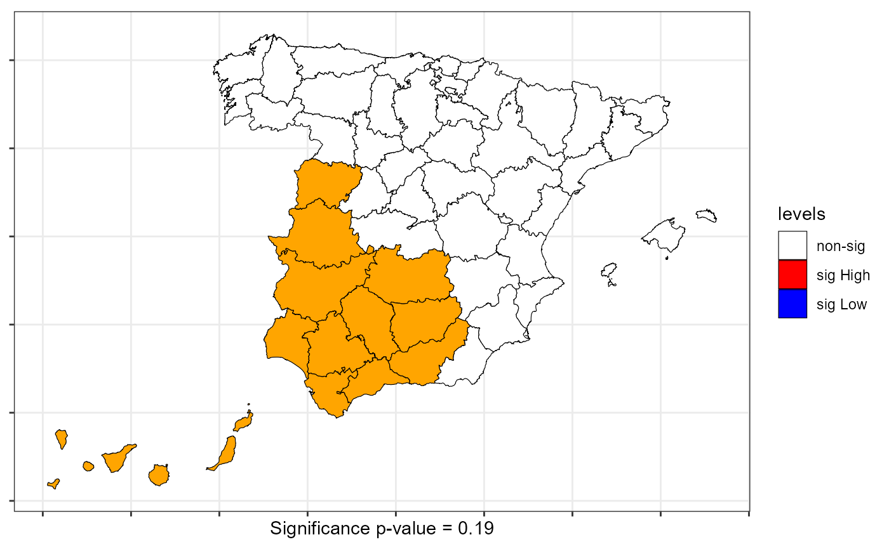
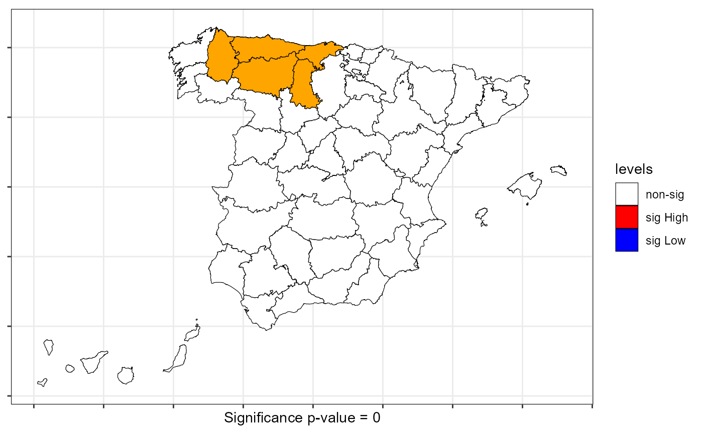
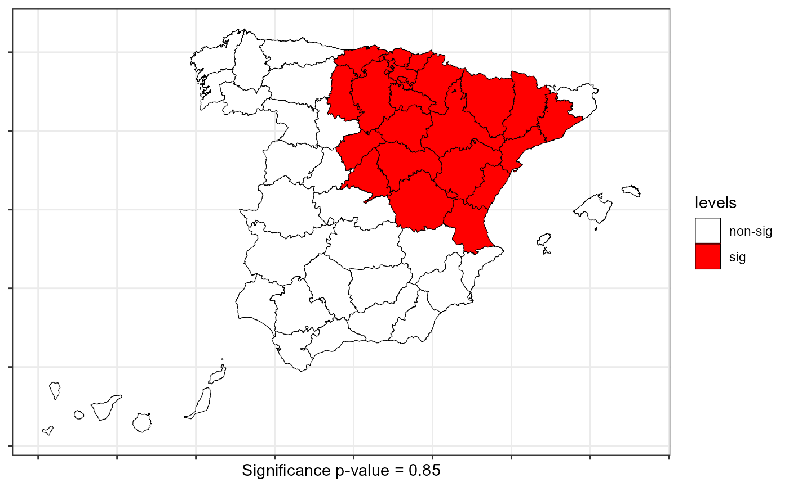

This function compute the scan test for Bernoulli and Multinomial categorical spatial process.
scan.test(formula = NULL, data = NULL, fx = NULL, coor = NULL, case = NULL, nv = NULL, nsim = NULL, distr = NULL, windows = "circular", alternative = "High", control = list())
| formula | a symbolic description of the factor (optional). |
|---|---|
| data | an (optional) data frame or a sf object containing the variable to testing for. |
| fx | a factor (optional). |
| coor | (optional) coordinates of observations. |
| case | Only for bernoulli distribution. A element of factor, there are cases and non-cases for testing for cases versus non-cases |
| nv | Maximum windows size, default nv = N/2. The algorithm scan for clusters of geographic size between 1 and the upper limit (nv) defined by the user. |
| nsim | Number of permutations. |
| distr | distribution of the spatial process: "bernoulli" for two levels or "multinomial" for three or more levels. |
| windows | a string to select the type of cluster "circular" (default) of "elliptic". |
| alternative | Only for bernoulli spatial process. A character string specifying the type of cluster, must be one of "High" (default), "Both" or "Low". |
| control | List of additional control arguments. |
A object of the htest and scantest class
method | The type of test applied (). |
fx | Factor included as input to get the scan test. |
MLC | Observations included into the Most Likelihood Cluster (MLC). |
statistic | Value of the scan test (maximum Log-likelihood ratio). |
N | Total number of observations. |
nn | Windows used to get the cluster. |
nv | Maximum number of observations into the cluster. |
data.name | A character string giving the name of the factor. |
coor | coordinates. |
alternative | Only for bernoulli spatial process. A character string describing the alternative hypothesis select by the user. |
p.value | p-value of the scan test. |
cases.expect | Expected cases into the MLC. |
cases.observ | Observed cases into the MLC. |
nsim | Number of permutations. |
Two alternative sets of arguments can be included in this function to compute the scan test:
Option 1 | A factor (fx) and coordinates (coor). |
Option 2 | A sf object (data) and the formula to specify the factor. The function consider the coordinates of the centroids of the elements of th sf object. |
The spatial scan statistics are widely used in epidemiology, criminology or ecology.
Their purpose is to analyze the spatial distribution of points or geographical
regions by testing the hypothesis of spatial randomness his distribution on the
basis of different distributions (e.g. Bernoulli, Poisson or Normal distributions).
The scan.test function obtain the scan statistic for the Bernoulli and Multinomial distribution.
To test independence in a spatial process, under the null, the type of windows is irrelevant but under the alternative the elliptic windows can to identify with more precision the cluster.
For big data sets (N >>) the windows = "elliptic" can be so slowly
seedinit | Numerical value for the seed (only for boot version). Default value seedinit=123 |
Kulldorff M, Nagarwalla N. (1995). Spatial disease clusters: Detection and Inference. Statistics in Medicine. 14:799-810
Jung I, Kulldorff M, Richard OJ (2010). A spatial scan statistic for multinomial data. Statistics in Medicine. 29(18), 1910-1918
Páez, A., López-Hernández, F. A., Ortega-García, J. A., & Ruiz, M. (2016). Clustering and co-occurrence of cancer types: A comparison of techniques with an application to pediatric cancer in Murcia, Spain. Spatial Analysis in Health Geography, 69-90.
| Fernando López | fernando.lopez@upct.es |
| Román Mínguez | roman.minguez@uclm.es |
| Antonio Páez | paezha@gmail.com |
| Manuel Ruiz | manuel.ruiz@upct.es |
# Case 1: scan test bernoulli rm(list = ls()) data(Spain) formula <- ~ MenWoman scan <- scan.test(formula = formula, data = spain.sf, case="men", nsim = 99, distr = "bernoulli") print(scan)#> #> Scan test. Distribution: bernoulli #> #> data: MenWoman #> scan-loglik = 4.6665, p-value = 0.19 #> alternative hypothesis: High #> sample estimates: #> #> Total observations in the MLC = 13.00 #> Expected cases in the MLC = 9.62 #> Observed cases in the MLC = 13.00 #>#> #> Summary of data: #> Distribution....................: bernoulli #> Number of locations.............: 50 #> Total number of cases...........: 50 #> #> Scan statistic: #> Type of cluster (alternative)...: High #> Value of statisitic (loglik)....: 4.67 #> p-value.........................: 0.19 #> #> IDs of cluster detect: #> Location IDs included..................: 39 35 23 12 41 7 30 16 11 20 25 38 15#> Called from: plot.scantest(scan, sf = spain.sf) #> debug: levels(sf$levels)[levels(sf$levels) == "0"] <- "non-sig" #> debug: if (z$cases.expect > z$cases.observ) levels(sf$levels)[levels(sf$levels) == #> "1"] <- "sig High" #> debug: if (z$cases.expect < z$cases.observ) levels(sf$levels)[levels(sf$levels) == #> "2"] <- "sig Low" #> debug: levels(sf$levels)[levels(sf$levels) == "2"] <- "sig Low" #> debug: cols <- c(`non-sig` = "white", `sig High` = "red", `sig Low` = "blue") #> debug: lplot_runs <- ggplot(sf) + geom_sf(aes(fill = levels), color = "black", #> shape = 21, size = mysize) + theme_bw() + theme(axis.text.x = element_blank(), #> axis.text.y = element_blank()) + xlab(paste0("Significance p-value = ", #> z$p.value)) + scale_fill_manual(values = cols, na.value = "orange", #> drop = FALSE) #> debug: lplot_runsscan <- scan.test(formula = formula, data = spain.sf, case="men", nv = 5, nsim = 99, distr = "bernoulli")#> Warning: A total of 18 clusters has the same value of the statistic. Report as MLC only the firt#> #> Scan test. Distribution: bernoulli #> #> data: MenWoman #> scan-loglik = 1.6009, p-value < 2.2e-16 #> alternative hypothesis: High #> sample estimates: #> #> Total observations in the MLC = 5.0 #> Expected cases in the MLC = 3.7 #> Observed cases in the MLC = 5.0 #>#> Called from: plot.scantest(scan, sf = spain.sf) #> debug: levels(sf$levels)[levels(sf$levels) == "0"] <- "non-sig" #> debug: if (z$cases.expect > z$cases.observ) levels(sf$levels)[levels(sf$levels) == #> "1"] <- "sig High" #> debug: if (z$cases.expect < z$cases.observ) levels(sf$levels)[levels(sf$levels) == #> "2"] <- "sig Low" #> debug: levels(sf$levels)[levels(sf$levels) == "2"] <- "sig Low" #> debug: cols <- c(`non-sig` = "white", `sig High` = "red", `sig Low` = "blue") #> debug: lplot_runs <- ggplot(sf) + geom_sf(aes(fill = levels), color = "black", #> shape = 21, size = mysize) + theme_bw() + theme(axis.text.x = element_blank(), #> axis.text.y = element_blank()) + xlab(paste0("Significance p-value = ", #> z$p.value)) + scale_fill_manual(values = cols, na.value = "orange", #> drop = FALSE) #> debug: lplot_runsscan <- scan.test(formula = formula, data = spain.sf, case="men", nv = 15, nsim = 99, distr = "bernoulli", windows ="elliptic")#> Warning: A total of 37 clusters has the same value of the statistic. Report as MLC only the firt#> Warning: NaNs produced#> Warning: NaNs produced#> Warning: NaNs produced#> Warning: NaNs produced#> Warning: NaNs produced#> Warning: NaNs produced#> Warning: NaNs produced#> Warning: NaNs produced#> Warning: NaNs produced#> Warning: NaNs produced#> Warning: NaNs produced#> Warning: NaNs produced#> Warning: NaNs produced#> Warning: NaNs produced#> Warning: NaNs produced#> Warning: NaNs produced#> Warning: NaNs produced#> Warning: NaNs produced#> Warning: NaNs produced#> Warning: NaNs produced#> Warning: NaNs produced#> Warning: NaNs produced#> Warning: NaNs produced#> Warning: NaNs produced#> Warning: NaNs produced#> Warning: NaNs produced#> Warning: NaNs produced#> Warning: NaNs produced#> Warning: NaNs produced#> Warning: NaNs produced#> Warning: NaNs produced#> Warning: NaNs produced#> Warning: NaNs produced#> Warning: NaNs produced#> Warning: NaNs produced#> Warning: NaNs produced#> Warning: NaNs produced#> Warning: NaNs produced#> Warning: NaNs produced#> Warning: NaNs produced#> Warning: NaNs produced#> Warning: NaNs produced#> Warning: NaNs produced#> Warning: NaNs produced#> Warning: NaNs produced#> Warning: NaNs produced#> Warning: NaNs produced#> Warning: NaNs produced#> Warning: NaNs produced#> Warning: NaNs produced#> Warning: NaNs produced#> Warning: NaNs produced#> Warning: NaNs produced#> Warning: NaNs produced#> Warning: NaNs produced#> Warning: NaNs produced#> Warning: NaNs produced#> Warning: NaNs produced#> Warning: NaNs produced#> Warning: NaNs produced#> Warning: NaNs produced#> Warning: NaNs produced#> Warning: NaNs produced#> Warning: NaNs produced#> Warning: NaNs produced#> Warning: NaNs produced#> Warning: NaNs produced#> Warning: NaNs produced#> Warning: NaNs produced#> Warning: NaNs produced#> Warning: NaNs produced#> Warning: NaNs produced#> Warning: NaNs produced#> Warning: NaNs produced#> Warning: NaNs produced#> Warning: NaNs produced#> Warning: NaNs produced#> Warning: NaNs produced#> Warning: NaNs produced#> Warning: NaNs produced#> Warning: NaNs produced#> Warning: NaNs produced#> Warning: NaNs produced#> Warning: NaNs produced#> Warning: NaNs produced#> Warning: NaNs produced#> Warning: NaNs produced#> Warning: NaNs produced#> Warning: NaNs produced#> Warning: NaNs produced#> Warning: NaNs produced#> Warning: NaNs produced#> Warning: NaNs produced#> Warning: NaNs produced#> Warning: NaNs produced#> Warning: NaNs produced#> Warning: NaNs produced#> Warning: NaNs produced#> Warning: NaNs produced#> #> Scan test. Distribution: bernoulli #> #> data: MenWoman #> scan-loglik = 5.5629, p-value < 2.2e-16 #> alternative hypothesis: High #> sample estimates: #> #> Total observations in the MLC = 15.0 #> Expected cases in the MLC = 11.1 #> Observed cases in the MLC = 9.0 #>scan <- scan.test(formula = formula, data = spain.sf, case="men", nv = 15, nsim = 99, distr = "bernoulli", windows ="elliptic", alternative = "Low")#> Warning: A total of 13 clusters has the same value of the statistic. Report as MLC only the firt#> Warning: NaNs produced#> Warning: NaNs produced#> Warning: NaNs produced#> Warning: NaNs produced#> Warning: NaNs produced#> Warning: NaNs produced#> Warning: NaNs produced#> Warning: NaNs produced#> Warning: NaNs produced#> Warning: NaNs produced#> Warning: NaNs produced#> Warning: NaNs produced#> Warning: NaNs produced#> Warning: NaNs produced#> Warning: NaNs produced#> Warning: NaNs produced#> Warning: NaNs produced#> Warning: NaNs produced#> Warning: NaNs produced#> Warning: NaNs produced#> Warning: NaNs produced#> Warning: NaNs produced#> Warning: NaNs produced#> Warning: NaNs produced#> Warning: NaNs produced#> Warning: NaNs produced#> Warning: NaNs produced#> Warning: NaNs produced#> Warning: NaNs produced#> Warning: NaNs produced#> Warning: NaNs produced#> Warning: NaNs produced#> Warning: NaNs produced#> Warning: NaNs produced#> Warning: NaNs produced#> Warning: NaNs produced#> Warning: NaNs produced#> Warning: NaNs produced#> Warning: NaNs produced#> Warning: NaNs produced#> Warning: NaNs produced#> Warning: NaNs produced#> Warning: NaNs produced#> Warning: NaNs produced#> Warning: NaNs produced#> Warning: NaNs produced#> Warning: NaNs produced#> Warning: NaNs produced#> Warning: NaNs produced#> Warning: NaNs produced#> Warning: NaNs produced#> Warning: NaNs produced#> Warning: NaNs produced#> Warning: NaNs produced#> Warning: NaNs produced#> Warning: NaNs produced#> Warning: NaNs produced#> Warning: NaNs produced#> Warning: NaNs produced#> Warning: NaNs produced#> Warning: NaNs produced#> Warning: NaNs produced#> Warning: NaNs produced#> Warning: NaNs produced#> Warning: NaNs produced#> Warning: NaNs produced#> Warning: NaNs produced#> Warning: NaNs produced#> Warning: NaNs produced#> Warning: NaNs produced#> Warning: NaNs produced#> Warning: NaNs produced#> Warning: NaNs produced#> Warning: NaNs produced#> Warning: NaNs produced#> Warning: NaNs produced#> Warning: NaNs produced#> Warning: NaNs produced#> Warning: NaNs produced#> Warning: NaNs produced#> Warning: NaNs produced#> Warning: NaNs produced#> Warning: NaNs produced#> Warning: NaNs produced#> Warning: NaNs produced#> Warning: NaNs produced#> Warning: NaNs produced#> Warning: NaNs produced#> Warning: NaNs produced#> Warning: NaNs produced#> Warning: NaNs produced#> Warning: NaNs produced#> Warning: NaNs produced#> Warning: NaNs produced#> Warning: NaNs produced#> Warning: NaNs produced#> Warning: NaNs produced#> Warning: NaNs produced#> Warning: NaNs produced#> #> Scan test. Distribution: bernoulli #> #> data: MenWoman #> scan-loglik = 28.653, p-value < 2.2e-16 #> alternative hypothesis: Low #> sample estimates: #> #> Total observations in the MLC = 13.00 #> Expected cases in the MLC = 9.62 #> Observed cases in the MLC = 8.00 #>#> Error in plot.scantest(scan, sf = spain.sf): could not find function "plot.scantest"# Case 2: scan test multinomial rm(list = ls()) data(Spain) formula <- ~ Older65 scan <- scan.test(formula = formula, data = spain.sf, nsim = 99, distr = "multinomial") print(scan)#> #> Scan test. Distribution: multinomial #> #> data: Older65 #> scan-loglik = 4.6027, p-value = 0.85 #> sample estimates: #> low middle high Sum #> cases.expect 6.3 7.56 7.14 21 #> cases.observ 10.0 3.00 8.00 21 #># Case 3: scan test multinomial rm(list = ls()) data(FastFood) formula <- ~ Type scan <- scan.test(formula = formula, data = FastFood.sf, nsim = 99, distr = "multinomial", windows="elliptic", nv = 100)#> Warning: A total of 5 clusters has the same value of the statistic. Report as MLC only the firt#> #> Scan test. Distribution: multinomial #> #> data: Type #> scan-loglik = 130.94, p-value < 2.2e-16 #> sample estimates: #> H P S Sum #> cases.expect 31.36 34.55 34.09 100 #> cases.observ 42.00 32.00 26.00 100 #>#> #> Summary of data: #> Distribution....................: multinomial #> Number of locations.............: 877 #> Total number of cases...........: 877 #> #> Scan statistic: #> Observed cases in the MLC...: 31.36 34.55 34.09 100 #> Expected cases in the MLC...: 42 32 26 100 #> Value of statisitic (loglik)....: 130.94 #> p-value.........................: 0 #> #> IDs of cluster detect: #> Location IDs included..................: 79 104 92 222 257 246 77 733 642 350 573 124 328 155 75 365 282 109 163 756 125 343 831 80 383 43 446 247 702 806 671 42 665 304 227 133 478 645 619 570 466 657 284 866 488 159 195 346 567 147 382 139 253 830 36 728 683 475 392 541 197 293 209 815 385 268 331 128 107 476 423 286 634 323 210 707 746 432 119 730 149 753 775 2 221 238 768 45 585 630 172 17 411 390 502 73 140 747 499 130#> Error in plot.scantest(scan, sf = FastFood.sf): could not find function "plot.scantest"# Case 4: DGP two categories rm(list = ls()) N <- 500 cx <- runif(N) cy <- runif(N) listw <- knearneigh(cbind(cx,cy), k = 10) p <- c(1/2,1/2) rho <- 0.5 fx <- dgp.spq(p = p, listw = listw, rho = rho) scan <- scan.test(fx = fx, nsim = 9, case = "1", nv = 20, coor = cbind(cx,cy), distr = "bernoulli",windows="elliptic")#> Error in match.arg(case, unique(mfx)): 'arg' should be one of "B", "A"#> function (file = "", what = double(), nmax = -1L, n = -1L, sep = "", #> quote = if (identical(sep, "\n")) "" else "'\"", dec = ".", #> skip = 0L, nlines = 0L, na.strings = "NA", flush = FALSE, #> fill = FALSE, strip.white = FALSE, quiet = FALSE, blank.lines.skip = TRUE, #> multi.line = TRUE, comment.char = "", allowEscapes = FALSE, #> fileEncoding = "", encoding = "unknown", text, skipNul = FALSE) #> { #> na.strings <- as.character(na.strings) #> if (!missing(n)) { #> if (missing(nmax)) #> nmax <- n/pmax(length(what), 1L) #> else stop("either specify 'nmax' or 'n', but not both.") #> } #> if (missing(file) && !missing(text)) { #> file <- textConnection(text, encoding = "UTF-8") #> encoding <- "UTF-8" #> on.exit(close(file)) #> } #> if (is.character(file)) #> if (file == "") #> file <- stdin() #> else { #> file <- if (nzchar(fileEncoding)) #> file(file, "r", encoding = fileEncoding) #> else file(file, "r") #> on.exit(close(file)) #> } #> if (!inherits(file, "connection")) #> stop("'file' must be a character string or connection") #> .Internal(scan(file, what, nmax, sep, dec, quote, skip, nlines, #> na.strings, flush, fill, strip.white, quiet, blank.lines.skip, #> multi.line, comment.char, allowEscapes, encoding, skipNul)) #> } #> <bytecode: 0x0000000045e40c58> #> <environment: namespace:base>#> Error in plot.scantest(scan): could not find function "plot.scantest"# Case 5: DGP three categories rm(list = ls()) N <- 1000 cx <- runif(N) cy <- runif(N) listw <- knearneigh(cbind(cx,cy), k = 10) p <- c(1/3,1/3,1/3) rho <- 0.5 fx <- dgp.spq(p = p, listw = listw, rho = rho) scan <- scan.test(fx = fx, nsim = 19, coor = cbind(cx,cy), nv = 30, distr = "multinomial",windows="elliptic")#> Warning: A total of 223 clusters has the same value of the statistic. Report as MLC only the firt#> #> Scan test. Distribution: multinomial #> #> data: fx #> scan-loglik = 33.928, p-value < 2.2e-16 #> sample estimates: #> A B C Sum #> cases.expect 10.02 9.99 9.99 30 #> cases.observ 5.00 17.00 8.00 30 #>#> Error in plot.scantest(scan): could not find function "plot.scantest"